GSB Délégué Régional
Le laboratoire désire mettre à disposition des visiteurs médicaux une application permettant de centraliser les
rapports de visite. Cette base d'information sera utilisée à des fins d'élaboration de la démarche de communication
auprès des praticiens et donnera une vision individuelle et synthétique de l'activité de représentation.
L’application développée est constituée d'un module :
Module « Délégué Régional » :
-- S'authentifier
-- Consulter le compte-rendu d’un visiteur
-- Consulter la liste des praticiens hésitants
Contraintes non fonctionnelles :
-- Documentations : Le contexte GSB et le cahier des charges de l’application AppliRV
-- Langage de programmation : Java SE Development Kit 8+
-- Middleware : MySQL-Java
-- SGBDR : MySQL/MariaDB
-- IDE : Netbeans 8.2+ (Java SE)
-- Outil de suivi des modifications : Git
Compétences :
A1.1.1 Analyse du cahier des charges d'un service à produire.
A1.4.1 Participation à un projet
A4.1.2 Conception ou adaptation de l'interface utilisateur d'une solution applicative.
A4.1.3 Conception ou adaptation d’une base de données
A4.1.6 Gestion d'environnements de développement et de test
A4.1.7 Développement, utilisation ou adaptation de composants logiciels
A5.1.3 Suivi d'une configuration et de ses éléments
A5.2.4 Étude d'une technologie, d'un composant, d'un outil ou d'une méthode.
-
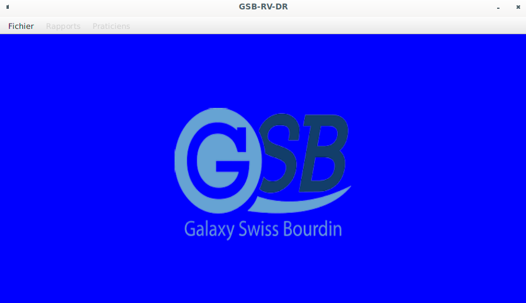
-
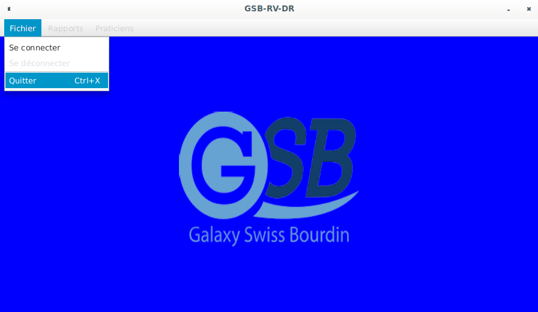
-
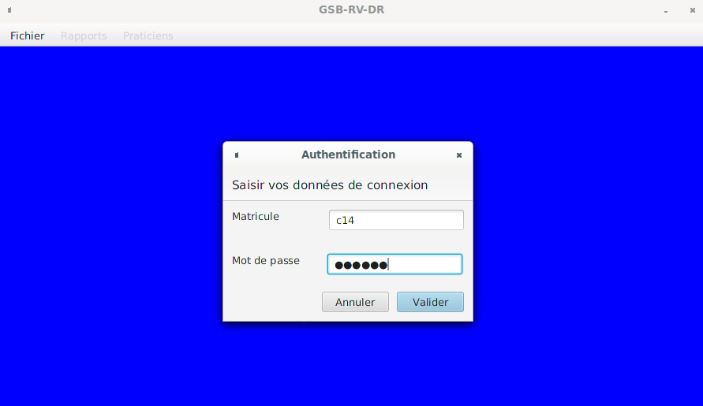
-
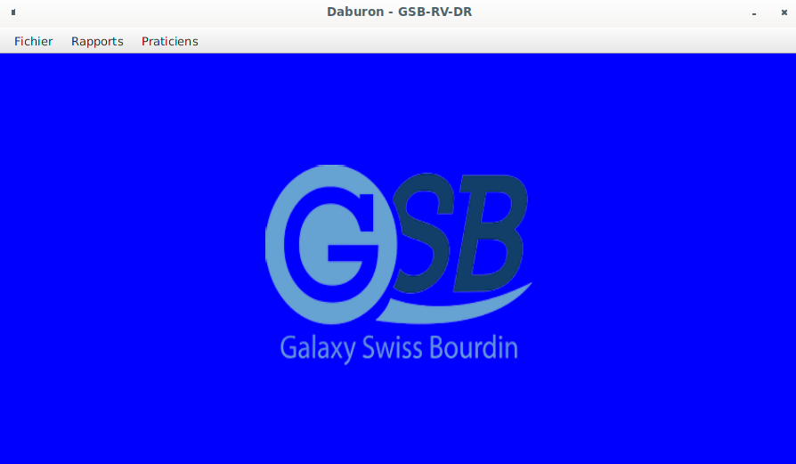
-
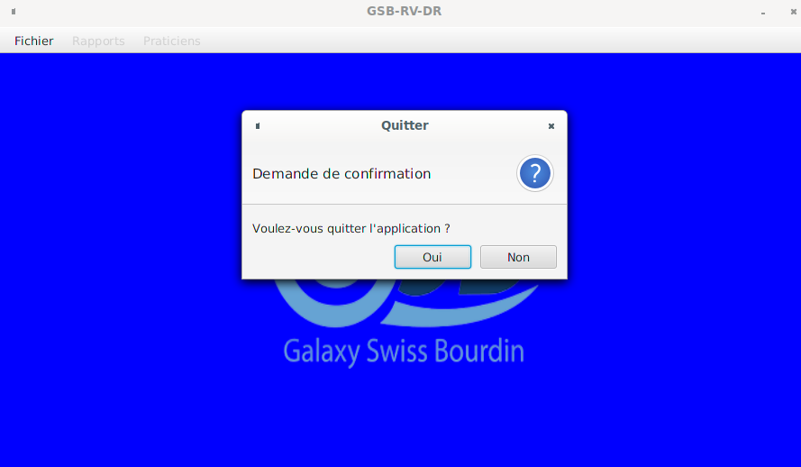
-
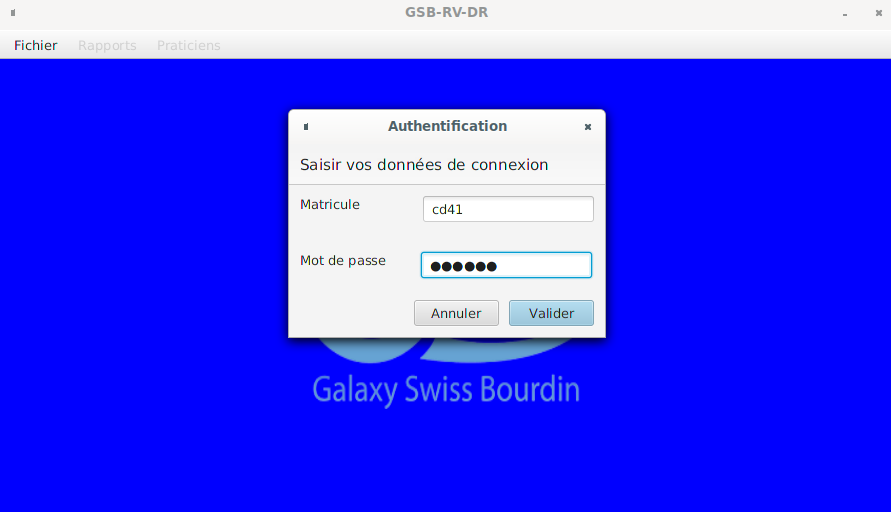
-
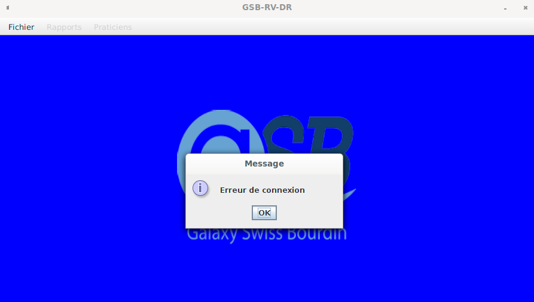
-
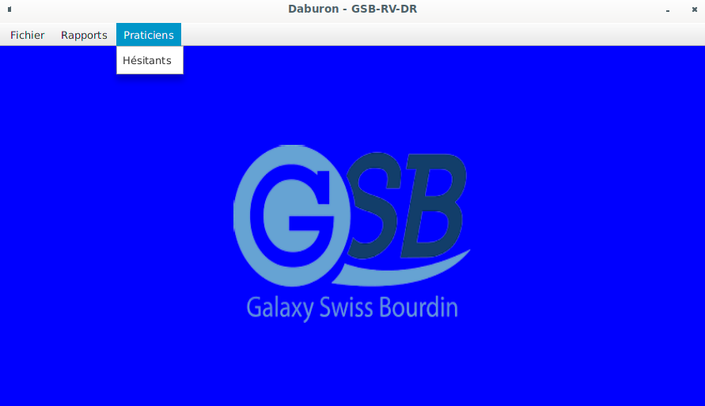
-
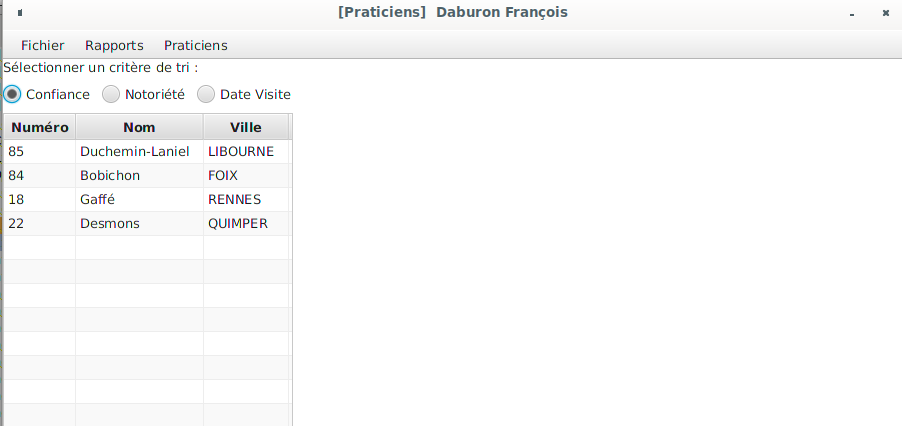
-
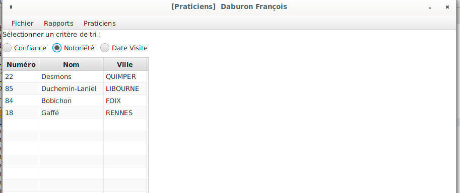
-
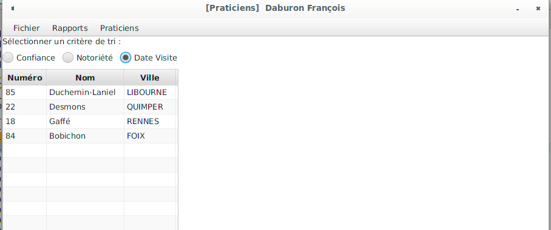
-
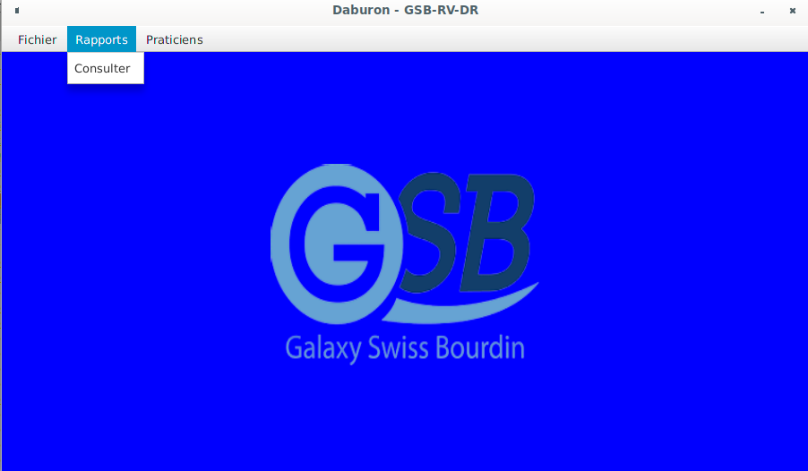
-
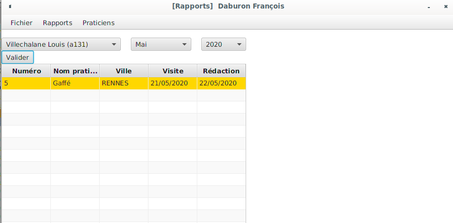
-
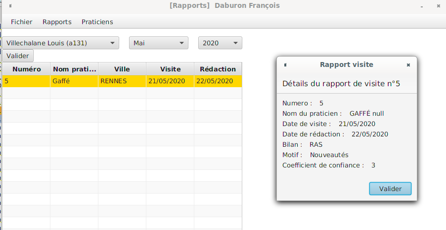